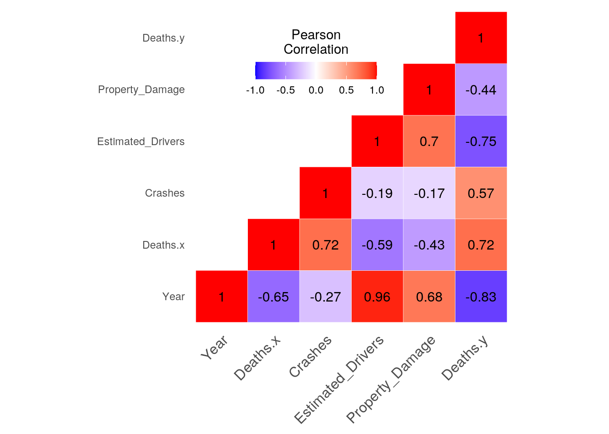
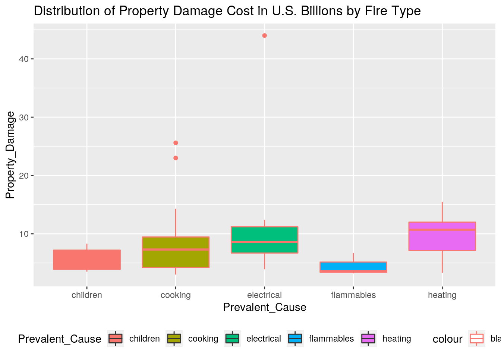
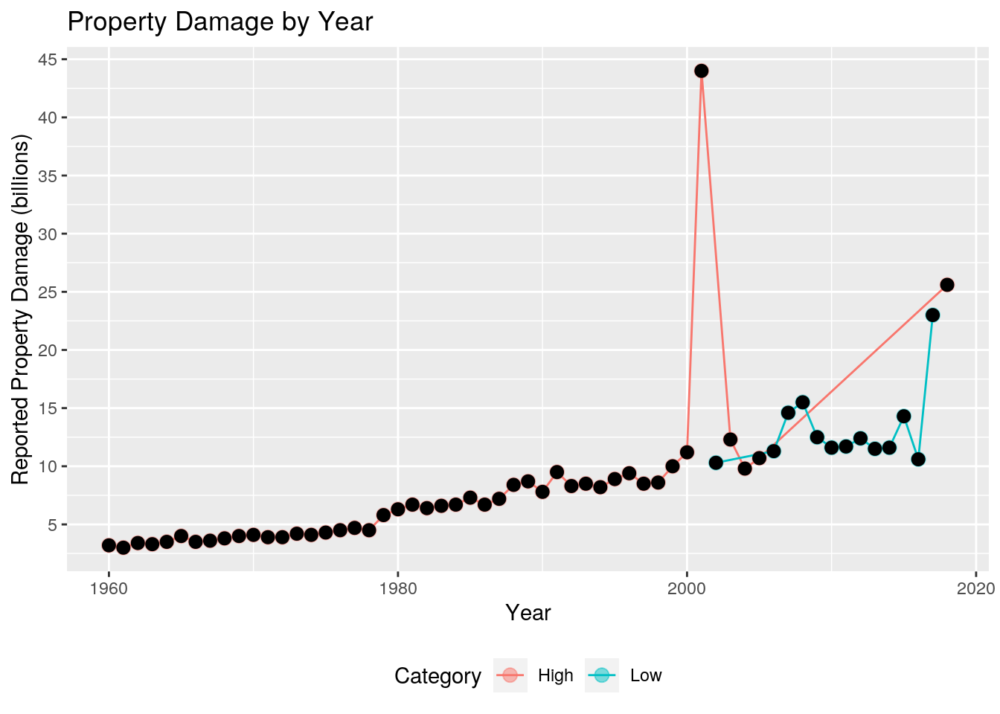
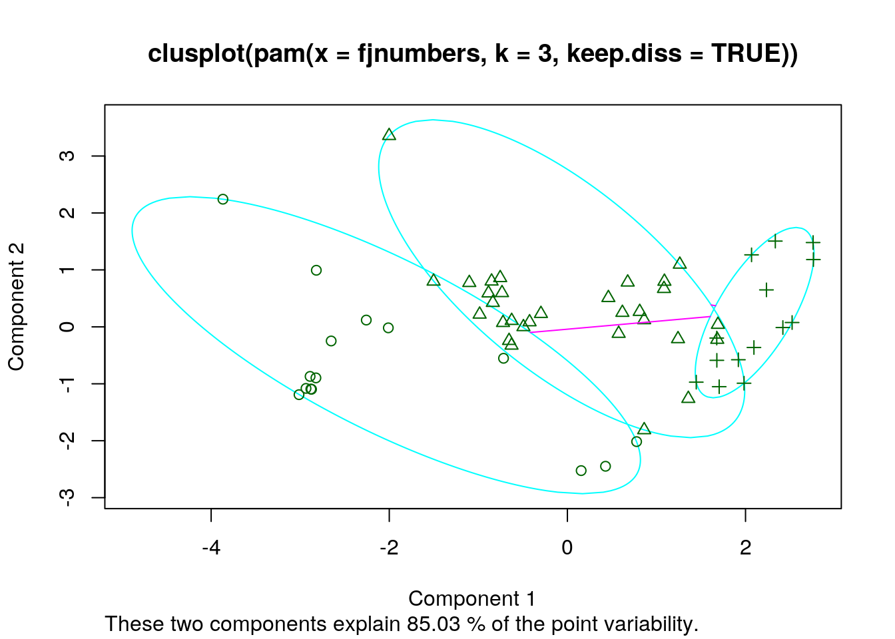
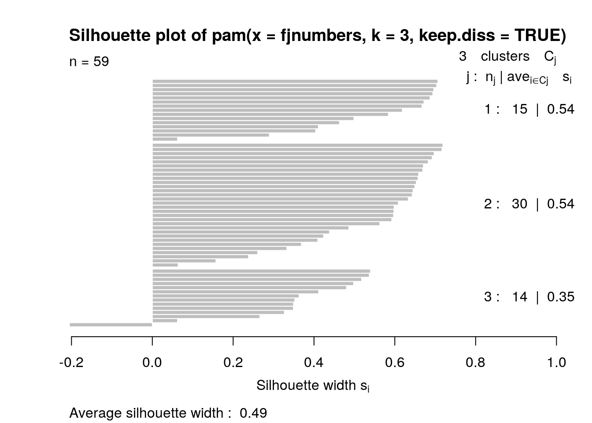
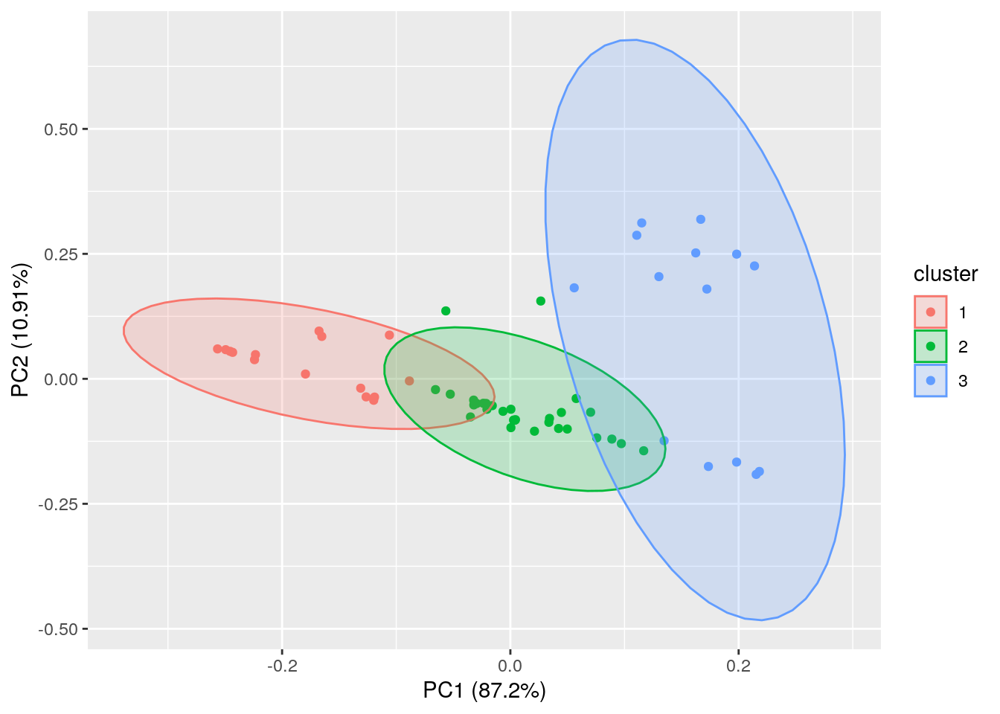

*In this study I will be comparing motor vehicle data alongside U.S civilian house fire data; in-particular, examining trends in the number of deaths over the years from each type of accident, with the common variable being the year (1960-2018). Motor vehicle accident data was collected from the Bureau of Transportation Statistics which includes motorcycles while excluding commercial vehicles. It includes the number of crashes, the total number of deaths (presented as Deaths.x), as well as the estimated number of registered drivers (in millions). House-fire data was retrieved from the National Fire Protection Association research articles on “Home Structure Fires”. The variables include the most-prevalent cause of fire (such as electrical, cooking, etc.), reported property damage (in U.S. billions), and the total number of deaths each year (presented as ‘Deaths.y’) which are all categorized by yearly totals.
*I am interested in this data due to the last decade’s rapid advancement in technology. Two potential associations I expect could be an increase in vehicle crashes and deaths due to distracted driving (texting, social apps, etc.) while a decrease in house fires from these same advancements. This predicted trend may be valid as safety policies, and therefore, safety features on appliances improve to protect against accidental house fires.
library(tidyverse)
library(dplyr)
library(ggplot2)
library(readr)
cars <- read_csv("cars.csv")
housefires <- read_csv("housefires.csv")cars$Year <- as.numeric(as.double(cars$Year))
housefires$Year <- as.numeric(as.character(housefires$Year))fj <- full_join(cars, housefires, by = c(Year = "Year"))
view(fj)*The common variable is 'year', with only one observation per year, per column. Additionally both datasets contain similar numeric categories with only one categorical variable present, making a full_join the easiest and most appropriate way to merge data. This keeps all columns and rows present which we will need for future graphs and comparisons. No cases needed to be dropped since data was already tidy/ no NAs.
filtered <- fj %>% filter(Property_Damage >= 7, Deaths.y <= 4000,
Year > 1990) %>% head()*property damage is greater than or equal to seven billion, while house fire deaths (.y) are less than or equal to 4000 people, and the year must be greater than 1990.
fj %>% select_if(is.numeric) %>% select_if(~mean(.) > 3500)## # A tibble: 59 x 3
## Deaths.x Crashes Deaths.y
## <dbl> <dbl> <dbl>
## 1 36399 31399 5545
## 2 36285 31600 6340
## 3 38980 33010 6400
## 4 41723 33477 5890
## 5 45645 35203 5995
## 6 47089 35482 6685
## 7 50894 34886 6700
## 8 50724 35220 5225
## 9 50725 36967 6185
## 10 53543 36093 5200
## # … with 49 more rowsfj %>% arrange(Prevalent_Cause) %>% head()## # A tibble: 6 x 7
## Year Deaths.x Crashes Estimated_Drive… Property_Damage Deaths.y
## <dbl> <dbl> <dbl> <dbl> <dbl> <dbl>
## 1 1966 50894 34886 103. 3.5 6700
## 2 1971 52542 36999 118. 3.9 6540
## 3 1980 51091 45284 147. 6.3 6505
## 4 1987 46390 41438 163. 7.2 5810
## 5 1992 39250 34942 173. 8.3 4730
## 6 1961 36285 31600 92 3 6340
## # … with 1 more variable: Prevalent_Cause <chr>*These ‘chunks’ include: children, cooking, electrical, flammables, and heating.
newvars <- fj %>% mutate(death_proportion = Deaths.y/Deaths.x,
pd_euros = Property_Damage * 0.85)
newvars <- newvars[-c(3, 4, 7)]
view(newvars)*The first mutation is the proportion of house fire deaths to motor vehicle deaths. The second mutation takes house fire property damage in U.S. dollars (billions) and converts to European currency.
fj %>% summarize_if(is.numeric, max) %>% data.frame()## Year Deaths.x Crashes Estimated_Drivers Property_Damage Deaths.y
## 1 2018 54589 45284 327 44 7710correlation <- fj[-c(7)]
cor(correlation, method = "pearson", use = "complete.obs")## Year Deaths.x Crashes Estimated_Drivers
## Year 1.0000000 -0.6509865 -0.2664422 0.9618342
## Deaths.x -0.6509865 1.0000000 0.7183493 -0.5927106
## Crashes -0.2664422 0.7183493 1.0000000 -0.1891954
## Estimated_Drivers 0.9618342 -0.5927106 -0.1891954 1.0000000
## Property_Damage 0.6780387 -0.4266316 -0.1706282 0.7025535
## Deaths.y -0.8300523 0.7172055 0.5666570 -0.7542348
## Property_Damage Deaths.y
## Year 0.6780387 -0.8300523
## Deaths.x -0.4266316 0.7172055
## Crashes -0.1706282 0.5666570
## Estimated_Drivers 0.7025535 -0.7542348
## Property_Damage 1.0000000 -0.4448266
## Deaths.y -0.4448266 1.0000000cortable <- cor(correlation, method = "pearson", use = "complete.obs")
knitr::kable(cortable)| Year | Deaths.x | Crashes | Estimated_Drivers | Property_Damage | Deaths.y | |
|---|---|---|---|---|---|---|
| Year | 1.0000000 | -0.6509865 | -0.2664422 | 0.9618342 | 0.6780387 | -0.8300523 |
| Deaths.x | -0.6509865 | 1.0000000 | 0.7183493 | -0.5927106 | -0.4266316 | 0.7172055 |
| Crashes | -0.2664422 | 0.7183493 | 1.0000000 | -0.1891954 | -0.1706282 | 0.5666570 |
| Estimated_Drivers | 0.9618342 | -0.5927106 | -0.1891954 | 1.0000000 | 0.7025535 | -0.7542348 |
| Property_Damage | 0.6780387 | -0.4266316 | -0.1706282 | 0.7025535 | 1.0000000 | -0.4448266 |
| Deaths.y | -0.8300523 | 0.7172055 | 0.5666570 | -0.7542348 | -0.4448266 | 1.0000000 |
*There is not much correlation. However there is a strong positive correlation between the estimated number of drivers and the year. As the years continue, there are more registered drivers.
fjnumbers <- fj[-c(1, 7)]
summary <- fjnumbers %>%
summarise(avg_deathsx = mean(Deaths.x), min_deathsx = min(Deaths.x),
max_deathsx = max(Deaths.x), quant_deathsx = quantile(Deaths.x),
sd_deathsx = sd(Deaths.x), var_deathsx = var(Deaths.x), ndis_deathsx = n_distinct(Deaths.x),
total_deathsx = n(), avg_deathsy = mean(Deaths.y), min_deathsy = min(Deaths.y),
max_deathsy = max(Deaths.y), quant_deathsy = quantile(Deaths.y),
sd_deathsy = sd(Deaths.y), var_deathsy = var(Deaths.y), ndis_deathsy = n_distinct(Deaths.y),
total_deathsy = n(), avg_Crashes = mean(Crashes), min_Crashes = min(Crashes),
max_Crashes = max(Crashes), quant_Crashes = quantile(Crashes),
sd_Crashes = sd(Crashes), var_Crashes = var(Crashes), ndis_Crashes = n_distinct(Crashes),
total_Crashes = n(), avg_pd = mean(Property_Damage), min_pd = min(Property_Damage),
max_pd = max(Property_Damage), quant_pd = quantile(Property_Damage),
sd_pd = sd(Property_Damage), var_pd = var(Property_Damage),
ndis_pd = n_distinct(Property_Damage), total_pd = n())*average vehicle deaths: 43,234.54 minimum amount of vehicle deaths: 32,479 maximum amount of vehicle deaths: 54,589 quantile:32,479 standard deviation: 5833.071 variance: 34,024,714 distinct cases: 59 total: 59
*average house fire deaths: 5,083 minimum amount of house fire deaths: 2,855 maximum amount of house fire deaths: 7,710 quantile: 2855 standard deviation: 1,424 variance: 2,028,811 distinct cases: 57 total: 59
*average number of crashes: 37,034 minimum number of crashes: 29,867 maximum number of crashes: 45,284 quantile: 29,867 standard deviation: 3,768 variance:14,204,783 number of distinct crashes: 59 total: 59
*average property damage: $8.856 billion minimum property damage: $3 billion maximum property damage: $44 billion quantile: $8.2 billion standard deviation: $6.483 billion variance: 42.03 distinct cases: 50 total: 59
housefires %>% group_by(Prevalent_Cause) %>%
summarise(avg_housedeaths = mean(Deaths), min_housedeaths = min(Deaths),
max_housedeaths = max(Deaths), quant_housedeaths = quantile(Deaths),
sd_housedeaths = sd(Deaths), var_housedeaths = var(Deaths),
ndis_housedeaths = n_distinct(Deaths), total = n())## # A tibble: 25 x 9
## # Groups: Prevalent_Cause [5]
## Prevalent_Cause avg_housedeaths min_housedeaths max_housedeaths
## <chr> <dbl> <dbl> <dbl>
## 1 children 6057 4730 6700
## 2 children 6057 4730 6700
## 3 children 6057 4730 6700
## 4 children 6057 4730 6700
## 5 children 6057 4730 6700
## 6 cooking 5228. 3275 7395
## 7 cooking 5228. 3275 7395
## 8 cooking 5228. 3275 7395
## 9 cooking 5228. 3275 7395
## 10 cooking 5228. 3275 7395
## # … with 15 more rows, and 5 more variables: quant_housedeaths <dbl>,
## # sd_housedeaths <dbl>, var_housedeaths <dbl>, ndis_housedeaths <int>,
## # total <int>housefires$Category[housefires$Deaths >= 3500] = "High"
housefires$Category[housefires$Deaths < 3500] = "Low"housefires %>% pivot_wider(names_from = Prevalent_Cause, values_from = Year,
values_fill = 0)## # A tibble: 59 x 8
## Property_Damage Deaths Category flammables cooking heating electrical
## <dbl> <dbl> <chr> <dbl> <dbl> <dbl> <dbl>
## 1 3.2 5545 High 1960 0 0 0
## 2 3 6340 High 0 1961 0 0
## 3 3.4 6400 High 0 1962 0 0
## 4 3.3 5890 High 0 0 1963 0
## 5 3.5 5995 High 0 1964 0 0
## 6 4 6685 High 0 0 0 1965
## 7 3.5 6700 High 0 0 0 0
## 8 3.6 5225 High 1967 0 0 0
## 9 3.8 6185 High 0 1968 0 0
## 10 4 5200 High 0 1969 0 0
## # … with 49 more rows, and 1 more variable: children <dbl>*So if the most common type of house fire was from cooking in 1960, then 1960 would go under that category along with other years when cooking was the most prevalent.
cars$Category[cars$Crashes >= 35000] = "High"
cars$Category[cars$Crashes < 35000] = "Low"pivot_longer(cars, cols = c("Category"), names_to = "Death",
values_to = "Year", names_repair = "unique")## # A tibble: 59 x 6
## Year...1 Deaths Crashes Estimated_Drivers Death Year...6
## <dbl> <dbl> <dbl> <dbl> <chr> <chr>
## 1 1960 36399 31399 88.9 Category Low
## 2 1961 36285 31600 92 Category Low
## 3 1962 38980 33010 93.7 Category Low
## 4 1963 41723 33477 95.6 Category Low
## 5 1964 45645 35203 99 Category High
## 6 1965 47089 35482 101 Category High
## 7 1966 50894 34886 103. Category Low
## 8 1967 50724 35220 105. Category High
## 9 1968 50725 36967 108. Category High
## 10 1969 53543 36093 112. Category High
## # … with 49 more rowshouse <- housefires %>% group_by(Category) %>% summarise(min_pc = min(Prevalent_Cause),
max_pc = max(Prevalent_Cause), ndis_pc = n_distinct(Prevalent_Cause),
total = n())library(corrplot)
library(ggplot2)
correlation = fj[1:6]
cormat <- round(cor(correlation),2)
library(reshape2)
melted_cormat <- melt(cormat)
get_lower_tri<-function(cormat){
cormat[upper.tri(cormat)] <- NA
return(cormat)
}
get_upper_tri <- function(cormat){
cormat[lower.tri(cormat)]<- NA
return(cormat)
}
upper_tri <- get_upper_tri(cormat)
melted_cormat <- melt(upper_tri, na.rm = TRUE)
ggheatmap <- ggplot(melted_cormat, aes(Var2, Var1, fill = value))+
geom_tile(color = "white")+
scale_fill_gradient2(low = "blue", high = "red", mid = "white",
midpoint = 0, limit = c(-1,1), space = "Lab",
name="Pearson\nCorrelation") +
theme_minimal()+ # minimal theme
theme(axis.text.x = element_text(angle = 45, vjust = 1,
size = 12, hjust = 1))+
coord_fixed()
ggheatmap +
geom_text(aes(Var2, Var1, label = value), color = "black", size = 4) +
theme(
axis.title.x = element_blank(),
axis.title.y = element_blank(),
panel.grid.major = element_blank(),
panel.border = element_blank(),
panel.background = element_blank(),
axis.ticks = element_blank(),
legend.justification = c(1, 0),
legend.position = c(0.6, 0.7),
legend.direction = "horizontal")+
guides(fill = guide_colorbar(barwidth = 7, barheight = 1,
title.position = "top", title.hjust = 0.5)) #Produces Pearson correlation map to easily view the correlation between all numberic variable. *There are some trends shown on the Pearson correlation graph. There is a small positive correlation between the number of deaths due to crahses and deaths due to housefires. There is another positive correlation between property damage and the year. Additionally, there is a negative correlation between the number of house fire deaths and the year which could support the idea that safety features on technology and appliances has increased to prevent fires.
fj %>% ggplot(aes(x = Prevalent_Cause, y = Property_Damage, fill = Prevalent_Cause,
color = "black")) + geom_boxplot() + theme(legend.position = "bottom") +
ggtitle("Distribution of Property Damage Cost in U.S. Billions by Fire Type") #Boxplots
*Boxplots comparing trends in property damage as categorized by type of fire. There are three outliers for the amount of property damage, two of which fall under cooking which could skew the data. Flammables caused the least amount of propery damage expenses while all other categories are failry similar in costs.
ggplot(housefires, aes(x = Year, y = Property_Damage, color = Category)) +
geom_point(size = 3, alpha = 0.5) + geom_line() + theme(legend.position = "bottom") +
ggtitle("Property Damage by Year") + xlab("Year") + ylab("Reported Property Damage (billions)") +
scale_y_continuous(breaks = seq(0, 45, 5)) + stat_summary(fun = mean,
color = "black", size = 0.5) #Point plot
*A different way of showing property damage trends throughout the years, but instead, categorized by high and low amounts of deaths. There have been a lower amount of house fire deaths from 2000 onward.This graph also shows that property damage has steadily increased over the years. This could be due to inflation in the US Economy.
library(cluster)
library(factoextra)
library(ggplot2)
library(ggfortify)
fjnumbers <- fj[-c(1, 7)]
pamfj <- pam(fjnumbers, 3, keep.diss = TRUE)
plot(pamfj) #k clusters/PAM, graphs
*Three clusters is best because it is most uniformly grouped. The silhouette graphs help measure how close each point in one cluster is to points in the neighboring clusters. A trong structure is found between 0.71 to 1.00. A reasonable structure lies between 0.51 to 0.70. A weak structure is about 0.26 to 0.50. There is no substantial structure if between -1 to 0.25.In this case, two clusters have a reasonable structure with values of 0.54 while the third has a weak structre with a value of 0.35.
autoplot(pam(fjnumbers, 3), frame = TRUE, frame.type = "norm")